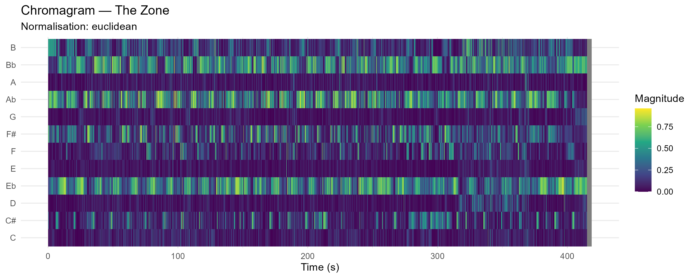
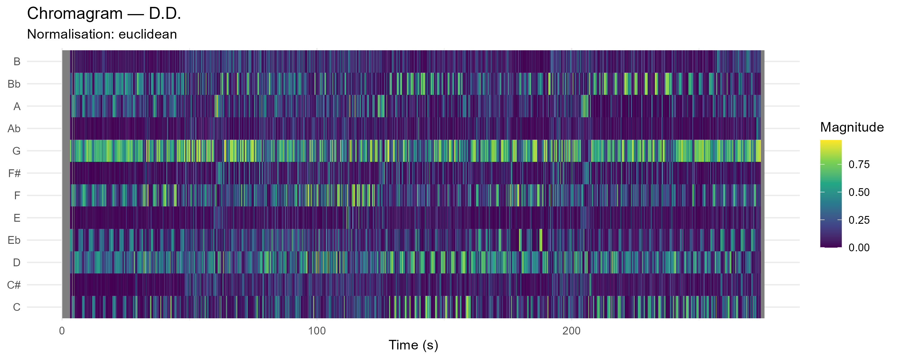
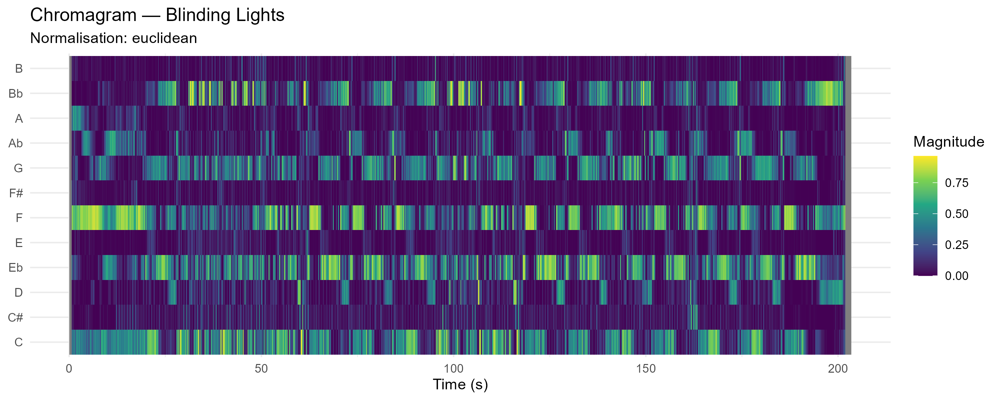
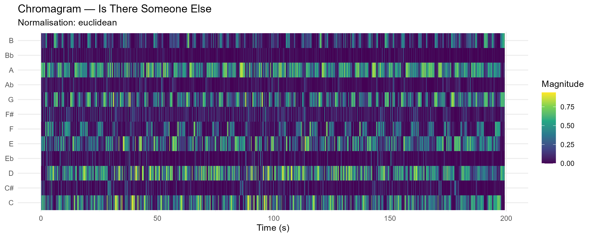
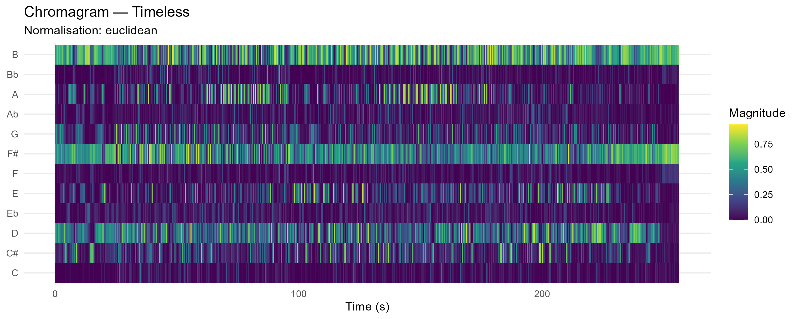

Chromagrams
A chromagram-based comparison of harmonic structure across selected tracks from The Weeknd’s early trilogy and After Hours.
To analyse harmonic structure, Euclidean chromagrams were used. A chromagram maps spectral energy onto the twelve pitch classes (C–B) over time, independent of octave. This makes it useful for comparing harmonic content and repeated tonal patterns across tracks.
At the same time, chromagrams do not show exact chords or melodies. Because octave information is removed, and because timbre, harmonics, and production effects can spread energy across multiple pitch classes, the visual patterns should be interpreted as indications of harmonic activity rather than literal note transcriptions.
Trilogy I
Wicked Games, The Zone, and D.D.
These three chromagrams show a relatively stable chroma profile across time. In all three tracks, a limited number of pitch classes remain active for long stretches, which creates strong horizontal bands. This suggests that the songs rely on a fairly stable tonal centre and a slower harmonic rhythm. Instead of frequent and sharply defined harmonic changes, the chroma energy evolves more gradually.
Another shared feature is that these plots look more diffuse than block-based. The patterns are continuous rather than sharply segmented, which makes the tracks feel more atmospheric and texture-driven. Compared to the second trilogy, these songs seem less dependent on strongly repeated verse–chorus-like contrasts and more focused on maintaining a sustained harmonic mood over longer durations.
Wicked Games

The Zone

D.D.

Trilogy II
Blinding Lights, Is There Someone Else, and Timeless
The chromagrams of Blinding Lights, Is There Someone Else, and Timeless show clearer structural contrast than the first trilogy. Instead of mostly continuous horizontal energy, these plots contain more visible vertical changes, where several pitch classes become stronger or weaker at the same time. This suggests more frequent harmonic shifts and stronger repetition of recurring progressions.
Compared to Wicked Games, The Zone, and D.D., these three tracks seem more clearly organised into repeated musical sections. The visual repetitions in the chromagrams may correspond to recurring formal units such as verses or choruses. Overall, this group appears more loop-based and pop-structured, while the first trilogy is more atmospheric and harmonically diffuse.
Blinding Lights

Is There Someone Else

Timeless

Solo Analysis
After Hours
The chromagram of After Hours stands somewhat apart from the other two groups. Like the first trilogy, it shows long-term tonal stability: several pitch classes remain active over large parts of the track, which creates a fairly coherent harmonic profile. At the same time, the energy distribution changes gradually across the duration of the song.
Unlike the second trilogy, the plot does not show strongly repeated block-like structures. Instead, the harmonic texture seems to develop slowly, with some pitch classes becoming more prominent in later sections while others fade into the background. This suggests that the track builds through gradual layering and changes in harmonic density rather than through frequent, sharply contrasted sections. Because of that, After Hours functions well as a bridge between atmospheric stability and subtle internal development, but it also justifies being treated as a separate case.
After Hours